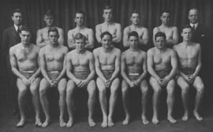
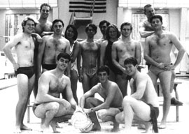
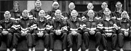

Dartmouth Water Polo History
BUILDING A WATER POLO TEAM:
THE DARTMOUTH COLLEGE EXPERIENCE SINCE 1926
An edited version of this history of Dartmouth water polo appeared in the September-October 1998 issue of Water Polo Scoreboard, the official publication of United States Water Polo, Inc.
Preserving the record of Dartmouth's water polo heritage is a work in progress. All Friends of Dartmouth Water Polo are encouraged to submit any additions or corrections.
If you think water polo is a recent or California sport, the long, resilient history of Dartmouth College water polo will surprise you. Ninth-oldest college in the United States, Dartmouth is a private, four-year, coeducational undergraduate school in Hanover, New Hampshire, with professional schools of business, engineering, and medicine. It focuses on liberal arts teaching and research for undergraduates. More than seventy years ago, a Dartmouth water polo team first competed intercollegiately. Today, almost fifty student-athletes play on the men's and women's teams. The Dartmouth men's team won last year's national club championship, completing its fourth consecutive regular league play without defeat and ending 1997 ranked as the nation's number one collegiate club team.
Dartmouth water polo is about overcoming challenges. Each of the five separate efforts to establish a team has had to secure the leadership, talent, continuity, team identity, and credibility to survive. Teams typically failed to outlive their founders.
Since 1985, however, Dartmouth water polo has grown in numbers and strength,
building steadily on previous accomplishments. More construction remains.
But the achievements so far provide useful insights into what it takes to
create a successful water polo program.
In the Beginning (1926-1973)
Water polo competition dawned at Dartmouth College on Friday, December 10, 1926, at 4 pm, but it barely resembled water polo as we know it today. Each team had six players. Five points were scored by touching the ball to the goal board defended by the opposing team. Hitting the goal board with a throw of at least fifteen feet scored three points. Hitting the goal board with a "free throw" after a foul scored one point. A regulation game consisted of two eight-minute periods.
The referee started play by throwing the ball to the center of the pool. Players dived in, and the three forwards from each team raced to get possession. Forwards played offense and the two backs and goal-guard played defense. Strategies assumed this three-on-three arrangement.
Play itself shared violence with rugby and football. A defender could tackle any offensive player within four feet of the ball. A player with the ball could be kept submerged indefinitely. Offensive players nearly drowned when they refused to release the ball. John Chamberlin '31, a Dartmouth water polo manager, recalls that "the action next to the goal board was fierce, approaching a drowning contest." Moreover, rule compliance varied. As back Robert Ackerberg '32 recollects, "there were rules, but some of us never exactly knew what they were."
Classified as a minor sport, Dartmouth water polo had little visibility or funding. Victories were few and far between. In 1928 and 1929, the team won twice apiece, but lost to Navy 3-80 and 9-62. The 1930 squad failed to win a game.

1931 Team (Robert Ackerberg '32: first row, far right)
The 1931 squad therefore shocked the water polo world by finishing nearly undefeated and sharing the Intercollegiate Swimming League national title with Pennsylvania and Navy. Perhaps it was the six returning lettermen. Perhaps it was the coach who, according to the Dartmouth yearbook, "developed the starless squad into a cooperating and fighting unit."
It was short-lived glory. The Depression made money scarce. Water polo's brutality frightened athletic administrators. Dartmouth eliminated water polo after the 1931 season, following the example set by Princeton, Brown, and others. Dartmouth water polo would not resurface for 35 years.
The Age of Aquarius gave Dartmouth water polo its second coming. The College had an especially strong group of sophomore swimmers. The assistant swimming coach promoted the team's formation in April, 1967 to keep his young stars conditioned during the off-season. One of them, Jay Glaser '69, recalls that when the first practice ended, "we were completely dehydrated, completely exhausted, and completely exhilarated. We hardly knew how much we were killing ourselves."
Water polo had changed. Teams now had seven players. Goals with nets replaced goal boards, and a game had four 15-minute quarters. Players passed the inflated ball more. But polo remained physical. "Water polo is a combination of soccer and the St. Valentine's Day Massacre," team co-founder Mike Harvey '69 noted at the time.
The team practiced more than it played, competing sporadically. By 1973,
intercollegiate water polo disappeared from Dartmouth for a second time.
Voices Crying Out in the Wilderness (1974-1985)
In 1974, Dartmouth swimmers gave water polo its third life by reviving the sport, again primarily to break the monotony of swim practice. Most distinctive about the team's play was Vincent Laudone '77, who started each period sprinting for the ball, because he was the team's fastest swimmer, and immediately afterwards swimming to his goalie position, because "I didn't mind getting hit on the head."
Dartmouth water polo operated on a predictably rag tag basis. Those who played water polo in high school taught fundamentals to the rest. Team organization and play suffered. During a tournament trip to Brown, the starting goalie detoured to pursue personal interests at all-female Wellesley College. This left backup goalie Kevin Hoffman '78 to face Brown. Defense was not a Dartmouth strength. Despite losing badly to Brown, Hoffman managed 37 saves, including the first that broke his nose. In 1978, the team played in the first Ivy League Championship.
Official "club sport" recognition came in 1979, but the team folded soon afterwards. Getting pool time, organizing practices, rallying team members to practice, teaching fundamentals to inexperienced players, scheduling games, planning trips, and marshaling the equipment and finances swamped the all-student effort.
Dartmouth's fourth water polo era began in the fall of 1982 when several students with high school experience recruited "retired" varsity swimmers and others by posting handbills at the main dining hall. The only balls available were a few nearly smooth Mikasas. Pool time had to be scrounged. Founder Whit Trovillion '86 recalls that the team played a form of jungle ball. "We made up in enthusiasm what we lacked in strength."
The team became co-ed when Terry Ann Kremer '84 joined. Others joined the team briefly and left. The lack of regulation goals prevented play at home, so the team traveled to compete against Yale's freshmen and the prep students at Andover and Exeter. The prep students never appreciated Dartmouth's unskilled physical approach to the game.
Most of the team's core competency graduated by 1984. Dartmouth water
polo faded for the fourth time.
Re-Genesis (1985-1989)
Water polo's irresistible attraction continued, for late in the fall of 1985, six students met to organize the fifth water polo team in Dartmouth history. Practices began in the winter after a player purchased balls in Boston during one of his social expeditions.
Once again, the few experienced players had to teach fundamentals to the others. More players joined. Because Dartmouth's spring term starts at the end of March, the new team missed most of the spring season. Fortunately, the player whose social connections in Boston made ball purchase possible also had a social connection at Mt. Holyoke. He arranged a match. The Dartmouth team overcame a fifty pound per player average weight disadvantage and triumphed 15-1.
Steve O'Connell '89 emerged as the principal team leader the following fall. He represented the team at the scheduling meeting of the fledgling New England Water Polo Association (which subsequently expanded into the Eastern Water Polo Association and then into today's Collegiate Water Polo Association). He came to campus early to advertise water polo to freshmen as they entered the dining hall during their pre-school orientation. The roster swelled.
Pool time remained inadequate and inconvenient. Equipment was minimal. Travel depended on personal cars. Housing at away tournaments came down to the floors in dormitory living rooms. Conditioning was painfully absent, resulting in fourth period collapses. The player-coach arrangement hindered appropriate adjustments and substitution. Despite it all, the Dartmouth team managed a 4-5 record.
The fall of 1986 also ended with a visit from a representative of the Dartmouth Alumni Association of Silicon Valley. The alumni association wanted a club project that would promote a sport of interest to Northern California alumni and would eventually bring a Dartmouth athletic team periodically to Northern California. The assembled team members declared their acceptance. Dartmouth water polo gained a sponsor and more important, a source of continuity and non-student backing.
Externally, Dartmouth water polo progressed at best modestly over the six years from the fall of 1987 through the fall of 1993. Each fall the team's captain would discover that only a few of the previous year's players could be counted on to play again. This forced finding an entirely new team. It did not help that the admissions office, athletic department, and swim coach routinely denied the existence of a Dartmouth water polo team. It did not help that the team typically practiced a week or less before playing its first regular season tournament. It did not help that most of the new players were equally new to water polo. Water polo practice unavoidably focused on basics. The season itself lasted less than eight weeks. No additional games were scheduled; the student leadership had enough trouble arranging the logistics for the league tournaments. Pool time was never sufficient or convenient.
Internally, Dartmouth water polo strengthened steadily. The alumni association recruited Dartmouth's new director of development as the team's advisor. The advisor helped the student's cut through bureaucratic barriers. He helped new team leaders learn about what had been done in the past and what needed to be done next. He opened his home for team social functions. He helped build a much-needed new goal. The Dartmouth Alumni Association of Silicon Valley provided moral support, modest supplementary funds, and sponsorship of an occasional team dinner. Dartmouth water polo's existence no longer rested solely on undergraduate shoulders.
Another key ingredient was the arrival of George Benz '92 in the fall of 1988. With Steve O'Connell entering his senior year, the leadership succession that had sunk previous teams threatened Dartmouth water polo again. Benz proved to be the right person at the right time. A starter on Palo Alto High School's nationally ranked team, Benz had credentials and charisma to bind players to the team. In competition, Benz's experience, training, athletic skill, confidence, and creative rule compliance compensated for his smaller size. He was second-team All-Ivy his freshman year.
But Benz also had a talent for teaching the sport and instilling loyalty. He patiently introduced basic skills. He would come to practice when sick, teaching from the deck and simultaneously teaching by example about commitment. Other lessons followed. An oft-repeated legend arose from the game when Captain Benz marched up to the foot taller opposing team captain and snarled "Fear me." The incident ignited pride, a newfound sense of team, as memorialized in team t-shirts (the first in years) worn on campus throughout the year.

1991 Team (George Benz '92: front row, center; Bob Halk '94:
second row, second from right)
All the founders of the fifth Dartmouth water polo team had graduated when the 1980s concluded. Dartmouth water polo nevertheless survived.
It was the beginning of the end of the beginning.
Work in Progress (1990-1993)
Massive turnover, poor conditioning, and inconsistent practice and game participation still thwarted competition performance. Victories were rare. Yet team infrastructure kept improving.
A new position of president assumed many administrative responsibilities previously juggled by the captain alone. Completion of the first Northern California training trip during the spring break of 1992 marked a significant breakthrough. The feat demonstrated how far the team had traveled organizationally.
Brent Schindele '93 assumed the captaincy on George Benz's graduation, marking yet another successful leadership transfer. A veteran of Southern California water polo, Schindele also combined playing ability with leadership skills.
Competition in the fall of 1992 was disappointing. To move forward, the team needed a non-player coach who could drive the team in practice and in play without the handicaps of managing peers or trying to coach while trying to play.
Finding and paying a coach was another matter. Several attempts ended unsuccessfully. In late September, Dartmouth's Athletic Department hired Jim Wilson, late of the University of Utah, as the new swimming coach. None of the swimmers or water polo players knew much about him. Research by the alumni representative from the Dartmouth Alumni Association of Silicon Valley revealed that Wilson had played polo in high school and coached the Utah team from 1980 to 1989 before its elimination. It looked promising.
Bob Halk '94 took over as captain in the fall of 1993. He convinced the team to begin training a week before classes started, another breakthrough. The freshmen class was especially talented, and the fall 1993 season started with the team winning all four games at its first tournament. Teams with better defense soured the record in the next. The slide continued. Team unity in and out of the pool faltered. Several starters insisted on driving to the Ivy League Championship at Harvard in a separate car. They arrived after the half, and a game was lost that could have been won. Poor teamwork and conditioning lost the remaining games as well. Internal dissension mounted. The outgoing team president refused to leave the pool when his substitution was called.
The alumni representative shuttle negotiated between the players and Coach Wilson. Coach Wilson said he would work with the team if the players invited him to do so. At a lunch organized by the alumni representative, each player expressed desire for a serious water polo team with more work and some players perhaps getting benched. Each player also wanted Jim Wilson to be the coach. The social contract was forged.
"It Is He Who Was Promised"
Coach Wilson met with the Dartmouth water polo team during the winter. He started working with the team in spring. Because Dartmouth's head water polo and men's swimming coach were one and the same Jim Wilson, swimmers could play polo without getting caught between conflicting coaches. Practices were soon larger than they had been in the fall. Coach Wilson organized the first home water polo tournament in nearly a decade. His unchallenged training and game direction effectively mobilized the team's talent. The alumni representative asked a senior how Wilson measured up as a coach. Remembering the many false starts in finding a coach before Jim Wilson arrived, the player responded prophetically: "It is he who was promised."
The following fall's competition revealed the progress. Dartmouth defeated all of its Eastern Division opponents, the first perfect regular season in Dartmouth history. At the Eastern Water Polo Association Championships, Dartmouth lost a close game against home team Yale but won the rest of its games and an invitation to Nationals in early November. At Nationals, Dartmouth avenged Easterns by beating Yale in the opening game. The powerhouse Army team defeated Dartmouth 10-7, but it was Army's closest game that year. Dartmouth not only played at Nationals, a feat unimaginable a few years earlier, it placed third. Dartmouth water polo had become a national power.
Coach Wilson capitalized on the team administration painstakingly built since the late 1980s. Now when prospective water polo or swimming athletes asked whether Dartmouth had a water polo team, they got a firm, enthusiastically positive answer. Unlike the student leadership that had often waited until fall to arrange competition and practice schedules, Wilson had everything set before summer. Team t-shirts and caps were ordered for delivery in time for the new season. An eight-page newsletter, complete with photographs, triumphed the previous year's remarkable achievements to team alumni, parents, and other friends. Fifteen players at a practice triggered celebration in the early 1990s; now anything less than twenty caused concern. Finding enough players to avoid a forfeit had preoccupied the team in former days; now Dartmouth fielded not one but two squads in intercollegiate competition.
Dartmouth began the 1995 season ranked fourth in the nation. The A team won its second division championship without defeat, but losing the EWPA Championships semifinals ended the season abruptly. Time was not wasted in despair. Dartmouth changed divisions to gain better competition before entering championship play. The players organized dinners and other activities to weld a tighter team. Even small measures, such as a structured pre-game warm-up drill, fortified team unity.
Growing water polo interest among Dartmouth women produced the Dartmouth women's team, also under Coach Wilson's command. It practiced hard and participated fully in the Collegiate Water Polo Association's spring 1996 season. The new women's team advanced quickly through the leadership of players with national level high school experience, such as Anne Soutter '96, Alyson Wilson '97, and Stephanie Adamson '98.
With help from the alumni association sponsors, the men's team trained in Northern California and scrimmaged against tough California teams. This prepared Dartmouth well, and in the fall of 1996, it swept undefeated to a New England Division championship and a second trip to Nationals. Only an untimely second game loss limited Dartmouth to fifth place. The women's team also made major strides in the spring, winning more games and showing greater teamwork.
Nothing better reflected Dartmouth water polo's rich history than having Robert Ackerberg '32 from the 1931 championship team in the spectator stands at the 1996 Nationals. The team enjoyed a record year of fundraising. Prospective players now contacted the team while still in high school. Attrition almost disappeared. Team members wore team jackets and t-shirts on campus and proudly declared that they played water polo as their sport.
The team's progress in heart, mind, body, and soul came to fruition in the fall of 1997. The men's team trained for a week in Southern California, followed by a weekend of intense competition in Northern California. Undefeated in regular league play for the fourth consecutive year, Dartmouth suffered a difficult loss in the hard-fought New England Division finals but played some of its best water polo to win every game at Nationals, becoming the National Champions for the 1997 season.The women's team continued its team building that spring, swiftly following in the men's team's tracks.

1997 Championship Team
The team continued with several successful seasons after the '97 national championship. The team continued its success in the regional division, claiming regional titles in 1996, 1998, 1999 and 2001. In 2006, legendary coach Jim Wilson handed the reins to polo veteran, Randy Budner. Though Wilson still influenced the direction of the sport, Coach Randy Budner was in charge. In the 2008-2009 season, the team led by graduate student Nick Riolo Tuck '09, brothers Michael and Dan Bazlewicz DMS '09, and seniors Porter Diehl '09 and Kyle Finnegan '09 capped an 11-1 season, avenging their only loss by beating Boston College in the New England Division Championship finals and earning a bid to the National Tournament in Athens, Ohio. The team finished 8th place in the nation, once again standing atop the New England Division.
In 2012, the team reclaimed the top spot in the New England Division. After losing to 7-5 to UCLA in the fifth place game, the team claimed sixth place at Nationals. In 2013, the team kept their claim on the top spot in the New England Division, and once again the team went to nationals. Seeking a berth to the finals, the team faced UCLA once again, but fell in a close game 10-8. After another close loss to Cal the next morning, Dartmouth was still able to improve on their 2012 result with a fourth place finish at Nationals.